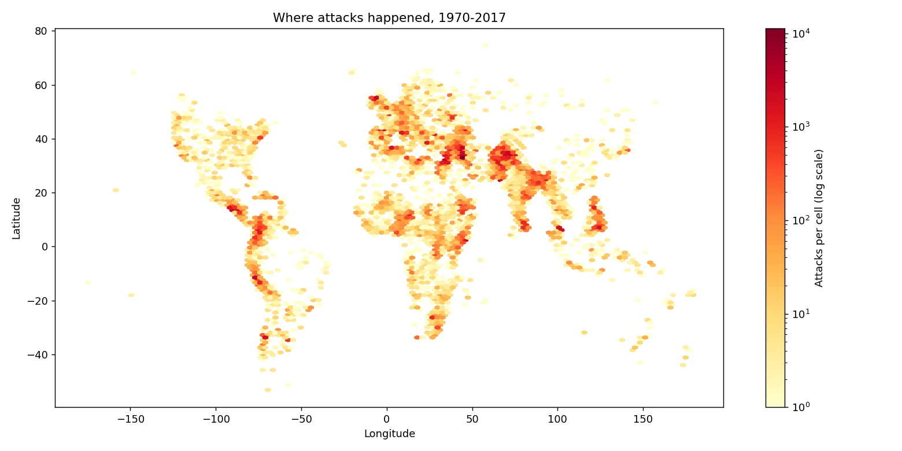
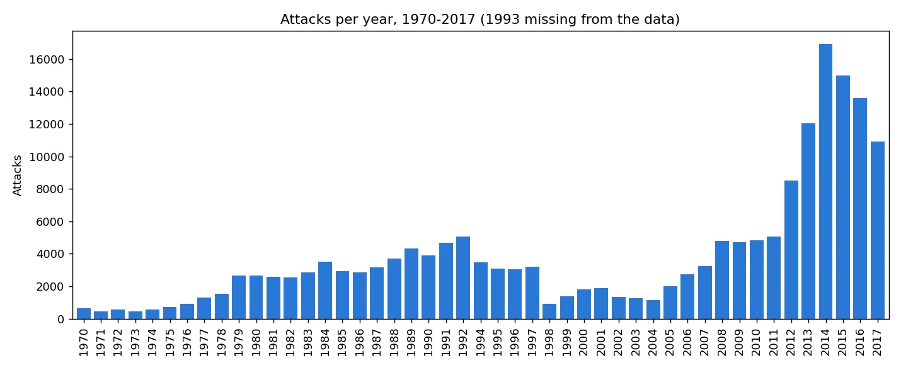
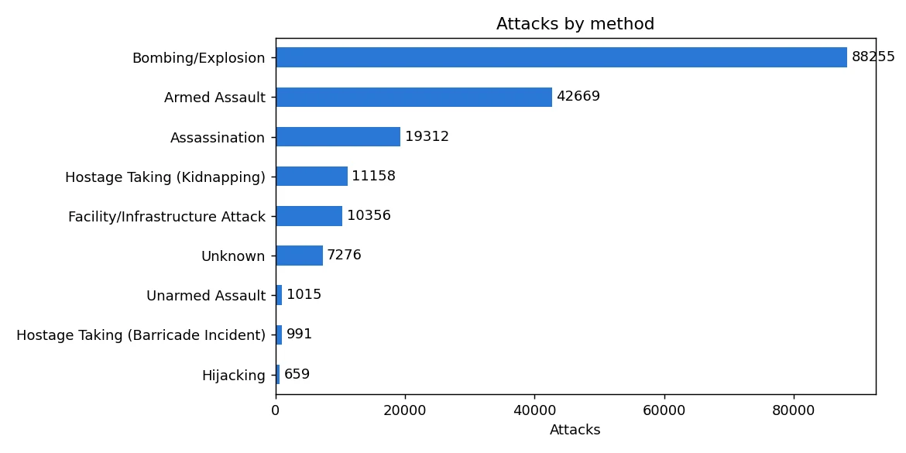

Exploratory analysis · World
Global terrorism, 1970–2017: where attacks happen, and how
- Business question
- Where do terrorist attacks happen most, and what kind of attacks are they?
- Key finding
- Mostly in Iraq, Pakistan and Afghanistan, which had 46% of all attacks in 2012–2017. And mostly bombings: 49% of the 181,691 attacks from 1970 to 2017.
- Recommendation
- Put prevention effort where the attacks are: those three countries, and bombings first. In Central America and Sub-Saharan Africa, plan for armed assaults too, which are as common as bombings there.
- Estimated impact
- 46%Of attacks in 2012–2017 happened in just three countries: Iraq, Pakistan and Afghanistan.
- Data
- Global Terrorism Database (START, University of Maryland): 181,691 attacks
- Period
- 1970–2017 (1993 is missing)
- Tools
- Python, pandas, matplotlib
Results



How I did it
- Loaded the 181,691-row file with pandas and kept the dozen columns I needed.
- Counted attacks by year, country, region and attack type with groupby and value_counts.
- Checked the data: 1993 is missing, 45.6% of attacks have no known group, some casualty numbers are blank, and one longitude was impossible (−86,185,896), which I fixed by putting the decimal point back.
- Drew every attack's location as a density map, so the busiest places stand out.
What could make this wrong
- Different teams collected the data over the years, so some changes may come from how attacks were counted.
- Blank killed and wounded numbers are counted as 0, so casualties are a little too low.
- Two 2001 US rows look like one event recorded twice.
What I learned
- Check the data before trusting a chart: one longitude of −86,185,896 squashed my first map into a line.
- A total hides the story: the 2014 peak came mostly from three countries, and the earlier rise from three different ones (Peru, El Salvador and Colombia).
- Say what's missing: 45.6% of attacks have no known group, and 1993 isn't in the data at all.
What I'd do next
- Check the two 2001 US rows that look like one event recorded twice.
- Look at attacks per million people, not just counts, so big countries don't dominate.
- Add 2018 onwards when a newer version of the database is available.